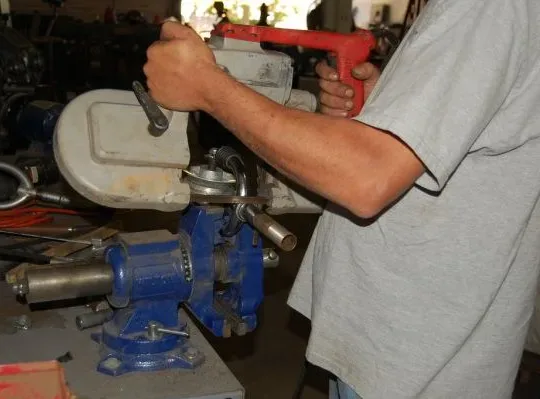

One saw, three ways to use it. Learn each part here, then take that part's quiz in person.
Three parts · checks along the way · a score to turn in at the end
Start here
Learn it here, check yourself, then take the quiz
The quiz
Three quizzes, one per part, in person and closed book. Part 1 Handheld (7.6): 12 questions, pass at 14 of 15. Part 2 Horizontal stand (7.7): 14 questions, pass at 16 of 17. Part 3 Vertical stand (8.4): 14 questions, pass at 17 of 18.
This deck
Quick checks save your first answer and explain it, and you can always move on. Checkpoints cover the can't-fail topics, and you can't go on until you get each one right. The last slide shows your score to download and turn in on the Teams assignment.
Must know
Can't-fail topics: blade changes unplugged, clamping the work, where your hands go, unplugging before you reach near the blade, finishing a cut, backing out of a stuck curve, and no gloves.
Part 3 is group 8: theory and the quiz come before first use, and it needs 7.5 Certified first.
7.6 · Part 1
Part 1: the handheld portaband
You carry the saw to the work. The work sits in the vise, and both your hands stay on the saw.
Bank: 7.6 Portaband, Part 1: Handheld
7.6 · The saw
The portaband is a bandsaw you hold, for metal the chop saw can't handle
How it works
A loop of thin blade runs around two wheels inside the housing. It cuts in the open gap between two guide bearings at the front, and a metal guide plate rests on the work.
What it's for
Threaded rod, a tube already on an assembly, or anything that can't go to the metal chop saw. Most aluminum tube still goes on the chop saw (7.5).
Our saw
A corded, wired saw: it plugs into the wall. "Unplug" in this deck means pull the plug, not just let go of the trigger.

A handheld band saw cutting pipe held in a vise. Photo: "Cutting" by sparr0, CC BY-SA 2.0, cropped.
Bank: 7.6 Portaband, Part 1: Handheld; team tool notes
7.6 · Blade change
Change the blade unplugged, and let the tension off before the old blade comes out
1
Unplug
Pull the plug. Fingers go on the blade and the wheels, so the saw must not be able to start.
2
Release tension
Turn the tension handle to let the blade go slack before you lift it off. The old blade can spring, so point its teeth away from you and others.
3
Fit the new one
Teeth face the way the manual shows. Seat it in both guide bearings and evenly on both wheels.
4
Tension, then plug in
Set the tension first. Only then plug the saw back in. Never spin the wheels with fingers on the blade.
Bank: 7.6 Portaband, Part 1: Handheld
7.6 · Checkpoint
The saw is unplugged and the old blade is dull. What has to happen before you lift that blade off the wheels?
Checkpoint: you can't go on until you get it right
7.6 · Checkpoint
Right. Tension off first, teeth pointed away.
A tight blade pried off the wheels can spring loose and cut you. The saw stays unplugged the whole time, and it only gets plugged back in after the new blade is seated and tensioned.
Press → to go on
7.6 · Checkpoint
Not quite. Look at the order again.
The saw stays unplugged from start to finish, and a blade under tension is stored energy. What lets that energy out before your hands are on it?
Press → to try the question again
7.6 · The blade
A backwards or off-center blade rubs, heats up, and wanders off the line
Direction
Teeth point the way the manual shows. On our handheld saw that's up and facing you where they cross the gap. Backwards, the teeth rub instead of cut.
What backwards looks like
Slow cutting, a hot blade, and a cut that wanders, even with a brand-new blade.
Riding wrong
Our saw has no tracking screws. Unplug, let the tension off, center the blade in both guide bearings and evenly on the wheels, then retension.
Still wrong?
If it still rides off after you reseat it, stop and get a mentor.
Bank: 7.6 Portaband, Part 1: Handheld
7.6 · Quick check
Quick check: a new blade that won't cut
Quick checks save your first answer and never stop you from moving on
7.6 · Quick check
Quick check: the blade sits crooked
Quick checks save your first answer and never stop you from moving on
7.6 · Teeth
Thin metal needs the finest blade, so more teeth sit in the wall
The rule
Aim for at least three teeth in the metal at once. Too few, and each tooth catches on the wall and the saw jerks.
Thin walls
Tube with a 1/16 in. wall, thin strip, and sheet get the finest blade we have, 24 teeth per inch (TPI).
Thick stock
Coarser blades like 14 TPI are for thick solid bar. The manual's 14 TPI for aluminum means solid stock, not tube.
Most tube
Goes on the metal chop saw (7.5), not the portaband.
Bank: 7.6 Portaband, Part 1: Handheld; Bank: 7.7 Portaband, Part 2: Horizontal stand
7.6 · Quick check
Quick check: a jerky cut
Quick checks save your first answer and never stop you from moving on
7.6 · Workholding
The work goes in the vise, because the saw needs both of your hands
Clamp it
Put the work in the vise or clamp it down. Nobody holds it: not you, and not a teammate.
Close to the jaws
Cut close to the vise jaws so the work can't flex or chatter.
Offcut falls free
Set it up so the piece you cut off can drop away. A trapped offcut pinches the blade.
Bank: 7.6 Portaband, Part 1: Handheld; FIRST Safety Manual §3.2.1
7.6 · Checkpoint
You need to trim a long threaded rod. A teammate offers to hold the far end steady while you cut. What do you say?
Checkpoint: you can't go on until you get it right
7.6 · Checkpoint
Right. The vise holds it, not a person.
A person can't hold as still as a vise, and when the cut breaks through, the end drops and the saw jumps. The teammate's job is to stand clear.
Press → to go on
7.6 · Checkpoint
Not quite. Think about who holds the work.
Go back to the rule for holding the work. It has no exceptions for helpers or distance.
Press → to try the question again
7.6 · Hands
Both hands stay on the handles, out of the open gap where the blade runs
Both hands
One hand on each of the saw's handles for the whole cut.
The open gap
Between the two guide bearings, the blade is bare. No fingers or thumbs near it, and never reach under the saw.
No gloves
A glove can catch on the blade and pull your hand into the guide or housing. Gloves are fine only for carrying stock or handling the blade unplugged.
Bank: 7.6 Portaband, Part 1: Handheld; team rule: no gloves at spinning tools
7.6 · Checkpoint
Halfway through a cut, the saw starts drifting off your line. What do you do with your hands?
Checkpoint: you can't go on until you get it right
7.6 · Checkpoint
Right. Both hands stay on the handles.
Steering with a thumb puts it next to the open gap, and one-handed means the saw can twist away from you. Stop, reset, and start again instead.
Press → to go on
7.6 · Checkpoint
Not quite. Look at where your hands end up.
Go back to where hands belong while the saw runs. A drifting cut is a reason to stop, not to move a hand.
Press → to try the question again
7.6 · Quick check
Quick check: when gloves are OK
Quick checks save your first answer and never stop you from moving on
7.6 · The cut
Start with the guide plate on the work, let the saw's weight cut, and ease up at breakthrough
1
Rest the plate
Set the metal guide plate on the work with the blade just clear and square to the cut. The plate takes the pull of the blade.
2
Up to speed
Pull the trigger and let it reach full speed. Then ease down to start a groove. A blade started against the work snags.
3
Barely push
The saw's own weight does the cutting. Pushing bends the blade, makes the cut crooked, and can pop the blade off. Stand balanced.
4
Breakthrough
The saw drops when it cuts through. Ease it up, keep both hands on, let go of the trigger, and wait for the blade to stop before you lift it or set it down.
Bank: 7.6 Portaband, Part 1: Handheld
7.6 · Quick check
Quick check: a rough start
Quick checks save your first answer and never stop you from moving on
7.6 · Quick check
Quick check: a crooked cut
Quick checks save your first answer and never stop you from moving on
7.6 · Quick check
Quick check: the last bit of the cut
Quick checks save your first answer and never stop you from moving on
7.6 · Trouble
If the blade jumps off the wheels, let go, unplug, and get a mentor
Blade comes off
Release the trigger, then unplug. A mentor checks the tension, the tracking, and the blade for damage before anyone reseats it.
Before every cut
Glasses on, work clamped, both hands ready, no gloves, sleeves rolled. Announce "using the portaband" and look around.
Spot the problem
Loose work, one hand on the saw, a thumb near the blade, gloves, or no glasses: any one of these means stop and fix it.
Bank: 7.6 Portaband, Part 1: Handheld; team practice
7.6 · Quick check
Quick check: the blade came off
Quick checks save your first answer and never stop you from moving on
7.6 · Quick check
Quick check: who's ready?
Quick checks save your first answer and never stop you from moving on
7.7 · Part 2
Part 2: the portaband on its horizontal stand
The saw hangs from an arm over a base. You lower it through the work instead of carrying it.
Bank: 7.7 Portaband, Part 2: Horizontal stand
7.7 · The stand
On the stand, the stand's switch turns the saw on and off
The arm
The saw hangs from an arm over a base with a fence and a clamp slot. A gas strut holds the arm up between cuts. It doesn't feed the cut.
The switch
A trigger lever holds the saw's trigger in, so the stand's own switch is the on and off. Make sure it's off before you plug in.
No clamp, no extras
We have no clamp for the slot, so you hold the work firmly against the fence by hand. There's no coolant, no automatic feed, and no auto shutoff.
Bank: 7.7 Portaband, Part 2: Horizontal stand
7.7 · Quick check
Quick check: what the strut does
Quick checks save your first answer and never stop you from moving on
7.7 · Setup
A saw that wiggles on its stand cuts crooked and binds, so check it first
Solid
The stand is bolted to the bench and doesn't rock.
Tight
Adjustment knobs and bracket bolts are tight, and the blade sits in the middle of the blade channel.
Angle cuts
Set the angle with the miter knob on the base (marks at 0, 30, 45, and 60), then retighten it. The other adjustment knobs are for mentors.
Bank: 7.7 Portaband, Part 2: Horizontal stand
7.7 · Quick check
Quick check: a wobbly first cut
Quick checks save your first answer and never stop you from moving on
7.7 · Quick check
Quick check: an angle that came out wrong
Quick checks save your first answer and never stop you from moving on
7.7 · Unplug
Unplug any time your hands go near the blade
Job
What it takes
Changing the blade
Unplugged
Putting the saw in or taking it out of the stand
Unplugged
Centering the blade in the channel
Unplugged
Loading the next piece against the fence
Switch off, saw up, blade stopped
Plugging in
Stand switch off first
Why
The trigger lever holds the saw's trigger in. A bumped stand switch starts the blade, so a switch that's off isn't enough when your hands are at the blade.
Bank: 7.7 Portaband, Part 2: Horizontal stand
7.7 · Checkpoint
The blade has drifted to one side of its channel. The stand switch is off and the saw is up. Can you nudge it back to center now?
Checkpoint: you can't go on until you get it right
7.7 · Checkpoint
Right. Hands at the blade means unplugged.
The trigger lever holds the saw's trigger in, so one bump of the stand switch starts it. Loading the next piece with the switch off is normal; working on the blade is not.
Press → to go on
7.7 · Checkpoint
Not quite. Look at what your hands are doing.
Go back to the unplug table. Ask whether this job puts your fingers on the blade.
Press → to try the question again
7.7 · Which saw
The stand is for thin strip and rod; tube goes on the metal chop saw
Metal chop saw (7.5)
Box tube and most aluminum tube, especially a batch of pieces the same length.
Portaband stand
A thin aluminum strip, or rod, cut to length.
Miter saw
Wood only. No metal goes on it.
Blade
Keep three or more teeth in the metal. Thick solid stock can use 14 TPI. Thin walls and strip use the finest, 24 TPI. A 1/16 in. wall is too thin for three teeth even with that.
Bank: 7.7 Portaband, Part 2: Horizontal stand; team tool notes
7.7 · Quick check
Quick check: two jobs, two saws
Quick checks save your first answer and never stop you from moving on
7.7 · Workholding
Hold the work against the fence with your hand well back, and let the offcut fall
Against the fence
Press the strip firmly against the fence with your hand well back from the blade's path.
Support the long end
Rest the long end on a stand or blocks at the height of the base. Not on a person.
Never hold the offcut
Holding both sides of the cut pinches the blade. Let the offcut drop.
Too short?
If a piece is too short to hold that way with your hand well back, it doesn't get cut on the stand.
Bank: 7.7 Portaband, Part 2: Horizontal stand
7.7 · Checkpoint
You're cutting a 5 in. piece off the end of a 4 ft strip. Where do your hand and the rest of the strip go?
Checkpoint: you can't go on until you get it right
7.7 · Checkpoint
Right. One side held, one side free.
Holding both sides closes the cut on the blade. A stand or blocks hold the long end at base height so nobody has to stand there holding it.
Press → to go on
7.7 · Checkpoint
Not quite. Think about both sides of the cut.
Go back to holding long work. One side is held and supported. What happens to the other side?
Press → to try the question again
7.7 · The cut
Lower the saw slowly, and switch it off before you reach for the piece
1
Lower slowly
Bring the running saw down gently. Its weight cuts. Forcing it twists or breaks the blade, so don't lean on it.
2
Breakthrough
The offcut falls. Turn the stand switch off and wait for the blade to stop.
3
Raise and take
Raise the saw, then take your piece. Don't set the saw down while the blade is still moving.
4
Stuck or stalled
Switch off, unplug, and get a mentor. Usual causes: pushing, the work shifting, the offcut pinching, or a dull blade.
Bank: 7.7 Portaband, Part 2: Horizontal stand
7.7 · Quick check
Quick check: a slow cut
Quick checks save your first answer and never stop you from moving on
7.7 · Checkpoint
A teammate finishes a cut, flips the stand switch off, and reaches for their piece while the blade is still slowing down. What's wrong?
Checkpoint: you can't go on until you get it right
7.7 · Checkpoint
Right. Off is the first step, not the last.
The blade keeps running for a few seconds after the switch. The order is off, stopped, raised, then hands in.
Press → to go on
7.7 · Checkpoint
Not quite. Look at when the blade stops.
Go back to the steps for finishing a cut. Your hands move only after one thing has happened.
Press → to try the question again
7.7 · Quick check
Quick check: the blade stopped in the cut
Quick checks save your first answer and never stop you from moving on
7.7 · PPE and cleanup
Glasses every time, no gloves, and chips get brushed, never blown
PPE
Safety glasses always. A face shield goes over them, not instead. Hearing protection is recommended.
Prep
Long hair up, sleeves rolled, nothing loose. No gloves while cutting.
Chips
Brush them off with a brush. Never blow them or wipe them with a bare hand.
The burr
File or deburr the cut edge before the part goes anywhere.
Bank: 7.7 Portaband, Part 2: Horizontal stand
7.7 · Quick check
Quick check: chips on the base
Quick checks save your first answer and never stop you from moving on
7.7 · Quick check
Quick check: who's ready?
Quick checks save your first answer and never stop you from moving on
8.4 · Part 3
Part 3: the portaband as a vertical bandsaw
Group 8: a machine that feeds your hands toward the blade. Theory and the quiz come before first use, and you need 7.5 Certified first.
Bank: 8.4 Portaband, Part 3: Vertical stand
8.4 · Setup
On the vertical setup, the blade stays put and you feed the work into it
Why it's group 8
Handheld, you move the saw to the work. Here, you push the work into a fixed blade, like a shop machine, so your hands travel toward the teeth.
How it's set up
The arm is raised upright, the stand is bolted at the bench edge with its base hanging down, and the guide plate is swapped for a small table.
The blade
Teeth run down toward the table. The deep-cut opening leaves the blade bare near the table. The trigger lever and stand switch work as in Part 2.
Hand fed
A push stick won't work here, so your hands guide the work, and pieces too small to hold safely don't get cut.
Bank: 8.4 Portaband, Part 3: Vertical stand; team tool notes
8.4 · Quick check
Quick check: why a higher group
Quick checks save your first answer and never stop you from moving on
8.4 · Check
A rocking table lets the work twist and pinch, so check the setup unplugged
Stand
Bolted at the bench edge, base hanging down, not rocking.
Table
Bolted on tight, with the blade centered in its slot. Do all setup with the saw unplugged.
Damage
A cracked wheel cover or a missing guard means unplug it, blue-tape it so nobody uses it, and tell a mentor. Guards stay in place, and nobody runs damaged equipment.
Bank: 8.4 Portaband, Part 3: Vertical stand; team practice: blue tape marks broken tools
8.4 · Quick check
Quick check: the work twisted
Quick checks save your first answer and never stop you from moving on
8.4 · Quick check
Quick check: a crack in the cover
Quick checks save your first answer and never stop you from moving on
8.4 · Unplug
Unplug before your fingers go anywhere near the bare blade
Job
What it takes
Putting the table on or taking it off
Unplugged
Clearing a scrap from beside the blade
Unplugged
Re-centering the blade in the table slot
Unplugged
Marking the next piece, away from the saw
Switch off is enough; no need to unplug
Why
The trigger lever holds the saw's trigger in. Bump the stand switch and the blade starts, right where your fingers are.
Bank: 8.4 Portaband, Part 3: Vertical stand
8.4 · Checkpoint
A sliver of aluminum is stuck in the table slot right next to the blade. The switch is off and the blade has stopped. What now?
Checkpoint: you can't go on until you get it right
8.4 · Checkpoint
Right. Fingers by the blade means unplugged.
With the trigger held in by the lever, a bumped switch is all it takes to start the blade. Unplugging is the only thing that makes it unable to start.
Press → to go on
8.4 · Checkpoint
Not quite. Think about what could start the blade.
Go back to the unplug table. Which row is this job?
Press → to try the question again
8.4 · Hands
Feed flat and gently with both hands, fingers beside the blade and never on the cut line
Flat
Keep the work flat on the table. A tilted piece lets the blade grab it.
Gently
Both hands, slow and steady. Pushing hard bends the blade. Don't force it.
Fingers
Beside the blade, never on the line in front of it. Never reach around the blade to pull the work through.
No gloves
No gloves while cutting, or on any group 8 machine. Gloves only for handling the blade with the saw unplugged.
Bank: 8.4 Portaband, Part 3: Vertical stand; team rule: no gloves at spinning tools
8.4 · Checkpoint
Near the end of a straight cut, your leading hand is about to cross in front of the blade. What do you do?
Checkpoint: you can't go on until you get it right
8.4 · Checkpoint
Right. Hands beside the blade, never on the line.
The cut line leads straight into the teeth. If you can't finish with your hands beside the blade, switch off and rethink the cut.
Press → to go on
8.4 · Checkpoint
Not quite. Follow the line with your eyes.
Go back to where fingers belong on the vertical setup. Where does the cut line lead?
Press → to try the question again
8.4 · Checkpoint
The plate you're cutting has sharp edges. A teammate puts on leather gloves to feed it into the blade. What do you tell them?
Checkpoint: you can't go on until you get it right
8.4 · Checkpoint
Right. No gloves on group 8 machines.
A glove can catch the teeth and pull your hand into the blade. Gloves are only for handling a blade with the saw unplugged.
Press → to go on
8.4 · Checkpoint
Not quite. Think about what a glove does near teeth.
Go back to the feeding slide and the rule on gloves for group 8.
Press → to try the question again
8.4 · Quick check
Quick check: a sudden yank
Quick checks save your first answer and never stop you from moving on
8.4 · Small parts
Cut small parts while they're still attached to a bigger piece
Small parts
Lay out the small shape on a bigger piece, cut its edges while it's attached, and make the cut that frees it last. Never fingertips or pliers near the blade; pliers can be grabbed.
Good jobs here
Curves in thin plate, and trimming thin strip.
Not here
Tube goes on the metal chop saw (7.5). Round stock rolls under the blade.
Bank: 8.4 Portaband, Part 3: Vertical stand
8.4 · Quick check
Quick check: holding a tiny part
Quick checks save your first answer and never stop you from moving on
8.4 · Quick check
Quick check: does it belong here?
Quick checks save your first answer and never stop you from moving on
8.4 · Curves
Make relief cuts before a tight curve, and switch off before you back out
The blade's limit
Our 1/2 in. wide blade can't turn tight curves. Twisting the work to force a turn bends or breaks the blade.
Relief cuts
Before a tight curve, make straight cuts from the edge in to the line. The waste falls away in pieces as you cut the curve.
Stuck mid-curve
Switch off at the stand switch and wait for a full stop. Then back the work out slowly. Backing out while it runs can pull the blade off or yank the work.
Bank: 8.4 Portaband, Part 3: Vertical stand
8.4 · Quick check
Quick check: a smoking blade
Quick checks save your first answer and never stop you from moving on
8.4 · Checkpoint
A teammate is stuck partway into a curve and starts pulling the work back out with the blade still running. What can happen?
Checkpoint: you can't go on until you get it right
8.4 · Checkpoint
Right. That's why it's off first.
The fix is switch off at the stand switch, wait for a full stop, and then ease the work back out along the cut.
Press → to go on
8.4 · Checkpoint
Not quite. Think about the blade before you move the work.
Go back to cutting curves. What has to happen before the work moves backward?
Press → to try the question again
8.4 · Wrap-up
On the stand the teeth run down toward the table, and the saw never runs alone
Blade change
Unplug, let the tension off, fit the new blade, then tension it and center it in the table slot before you plug in.
Tooth direction
On the vertical setup, the teeth run down toward the table. Check by watching it run, hands clear.
Between cuts
Switch it off at the stand switch between cuts, even just to mark your next line. Wait for the blade to stop before you reach in, brush scrap off after it stops, and never walk away while it runs.
Every cut
Glasses on, both hands on the work, fingers off the line, no gloves, and no piece too small to hold.
Bank: 8.4 Portaband, Part 3: Vertical stand
8.4 · Quick check
Quick check: after a blade change
Quick checks save your first answer and never stop you from moving on
8.4 · Quick check
Quick check: the last cut
Quick checks save your first answer and never stop you from moving on
Finish
Passing gets you Supervised; Certified comes from real work
Use, watched by a mentor
What they watch for
7.6: blade change
Unplugged, tension off first, teeth the right way, tensioned before plugging in
7.6: cut tube or threaded rod in the vise
Clamped near the jaws, both hands, plate on the work, barely pushing
7.7: check the stand, then cut strip or rod to length
Stand solid, knobs tight, hand well back, long end supported
7.7: angle cut, checked with a square
Miter knob set and retightened, offcut left free
8.4: check the vertical setup
Unplugged, table bolted, blade centered in the slot
8.4: straight cut, curve with relief cuts, and a small part
Fingers off the line, relief cuts first, small part freed last
Passing
Each part's quiz gets you Supervised on that part.
Certified
A mentor watches you do these on real work. A spot-the-problem check can stand in for one use on 8.4.
From the bank's Uses for Certified tables (proposed).
Finish
Your score: download it and turn it in
First-try score across 26 quick checks and 10 checkpoints. Photo credits
Credits
Photo credits
Photo
By
License
Cutting (handheld band saw)
sparr0, via Flickr
CC BY-SA 2.0
Photo via Openverse: flickr.com/photos/22611472@N02/5129658805